配方大全
这一页由脚本直接读游戏里的配方文件画出来，和游戏永远一致。鼠标放到格子上能看到物品名。
11 种木头的火锅桌、高火锅桌、板凳、条凳、蘸料台配方都一样，只是把木板换成对应的木板，这里只画橡木的。盘子五种材质（石英、竹、红陶、铜、铁）的小碟各自单列，大盘子只画石英的，其他材质把小碟换成对应材质的小碟。
灶台、锅与筷子
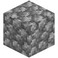
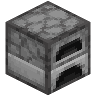
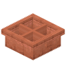
铜制田字火锅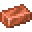
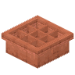
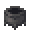
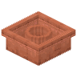
铜制圆心鸳鸯锅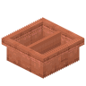
铜制直隔鸳鸯锅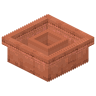
铜制方心鸳鸯锅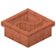
铜制太极鸳鸯锅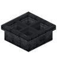
铁制田字火锅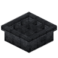
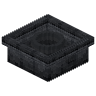
铁制圆心鸳鸯锅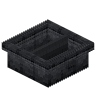
铁制直隔鸳鸯锅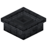
铁制方心鸳鸯锅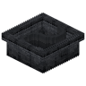
铁制太极鸳鸯锅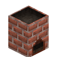
高灶台火锅桌与凳子
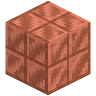
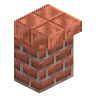
切制铜高火锅桌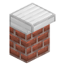
铁高火锅桌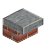
磨制安山岩火锅桌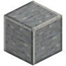
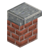
磨制安山岩高火锅桌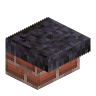
磨制黑石火锅桌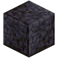
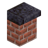
磨制黑石高火锅桌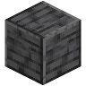
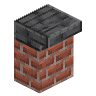
磨制深板岩高火锅桌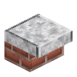
磨制闪长岩火锅桌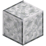
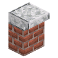
磨制闪长岩高火锅桌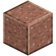
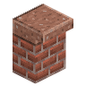
磨制花岗岩高火锅桌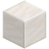
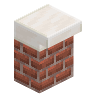
石英高火锅桌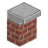
平滑石头高火锅桌盘子
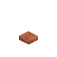
铜小碟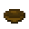
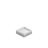
铁小碟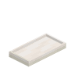
石英八格大盘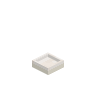
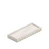
石英五格长盘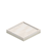
石英四格方盘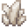
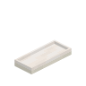
石英三格长盘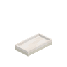
石英双格盘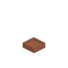
红陶小碟蘸料台
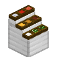
铁蘸料台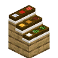
橡木蘸料台厨具与食材
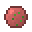
香菜牛肉丸烹饪（生 → 熟）
这些生食材放进熔炉、烟熏炉、营火都能烤熟，丢进火锅里涮也一样（锅里用烟熏炉的时间，再按火力和汤底折算，见「灶台与火锅」）。